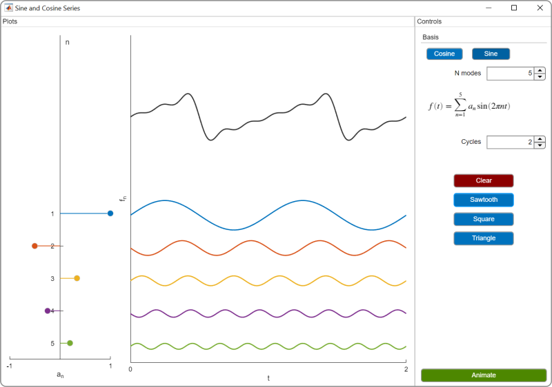

Fourier Analysis
Information
This curriculum module teaches Fourier analysis using interactive
live scripts
and MATLAB® apps.
The module is taught from a signal processing perspective at a level
suitable for an introductory signals and systems course.
In the first lesson, students use apps to visualize Fourier series and
build intuition about the frequency domain. In subsequent lessons,
students study complex Fourier series, Fourier transforms, and discrete
Fourier transforms. As students progress, they transition from utilizing
apps to writing their own code to analyze signals. Throughout the module,
students apply Fourier techniques to analyze recorded audio signals.
Each topic includes a lab that applies the concepts taught in the lesson.
The solutions are available upon instructor request. If you
would like to request solutions, find an issue,
or have a suggestion, email the MathWorks online teaching team at
onlineteaching@mathworks.com
Getting Started
 Add-Ons > Get Add-Ons.
Add-Ons > Get Add-Ons.
Products
MATLAB, Symbolic Math Toolbox
Modules
Interactive Examples
Learning Goals
Lab Assignments
Fourier Series
FourierSeries.mlx

Lab1_FourierSeries.mlx
Complex Fourier Series
ComplexFourierSeries.mlx

Lab2_ComplexFourierSeries.mlx
Fourier Transform
FourierTransform.mlx

Lab3_FourierTransform.mlx
Discrete Fourier Transform
DiscreteFourierTransform.mlx

Lab4_DFT.mlx
Apps
Sine and Cosine Series app

Fourier Series app

Magnitude and Phase app

Complex Fourier Series app

Copyright 2022 The MathWorks™, Inc.